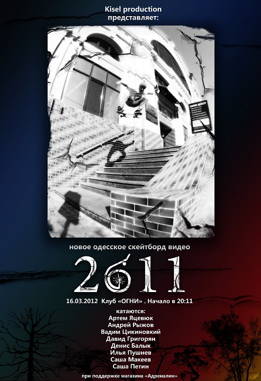

<?xml version="1.0" encoding="UTF-8"?>
<rss version="2.0"
	xmlns:content="../purl.org/rss/1.0/modules/content/index.html"
	xmlns:wfw="../wellformedweb.org/CommentAPI/index.html"
	xmlns:dc="../purl.org/dc/elements/1.1/index.html"
	xmlns:atom="../www.w3.org/2005/Atom"
	xmlns:sy="../purl.org/rss/1.0/modules/syndication/index.html"
	xmlns:slash="../purl.org/rss/1.0/modules/slash/index.html"
	>

<channel>
	<title>Daily Weekend &#187; Видео</title>
	<atom:link href="@feed=rss2&cat=4.html" rel="self" type="application/rss+xml" />
	<link>./</link>
	<description>Ukrainian online journal about skateboarders life</description>
	<lastBuildDate>Wed, 21 Mar 2012 10:53:10 +0000</lastBuildDate>
	<language>en</language>
	<sy:updatePeriod>hourly</sy:updatePeriod>
	<sy:updateFrequency>1</sy:updateFrequency>
	<generator>../wordpress.org/@v=3.0.5</generator>
		<item>
		<title>Daily Weekend закрывается</title>
		<link>@p=2134</link>
		<comments>@p=2134#comments</comments>
		<pubDate>Wed, 21 Mar 2012 10:51:38 +0000</pubDate>
		<dc:creator>admin</dc:creator>
				<category><![CDATA[Видео]]></category>
		<category><![CDATA[Интервью]]></category>
		<category><![CDATA[Новости]]></category>

		<guid isPermaLink="false">@p=2134</guid>
		<description><![CDATA[Спустя год работы, пришло время закрыть этот сайт. Это 348-ая новость, и этот показатель меня радует &#8211; сайт действительно обновлялся практически каждый день. Еще больше нравится то, что ¾ новостей были украинскими, у нас действительно стало все происходить чаще и &#8230; <a href="@p=2134.html">Продолжить чтение <span class="meta-nav">&#8594;</span></a>]]></description>
			<content:encoded><![CDATA[<p>Спустя год работы, пришло время закрыть этот сайт. Это 348-ая новость, и этот показатель меня радует &#8211; сайт действительно обновлялся практически каждый день. Еще больше нравится то, что ¾ новостей были украинскими, у нас действительно стало все происходить чаще и интересней, за это, конечно же, спасибо всем вам, ведь вы и делаете эти новости: катаетесь, снимаете, фотографируете, делаете что-то новое и вообще развиваете наше любимое дело в Украине.<br />
За этот год, было опубликованы разные новости, и одни из самых популярных хотелось бы повторить.<br />
<strong><a href="@p=161.html" target="_blank"> Пять самых суровых интро</a><br />
<a href="@p=214.html" target="_blank"> Свежая скейт-пресса, или как покупать журналы за 5 грн</a><br />
<a href="@p=242.html" target="_blank"> Скейтбординг и музыка. Хардкор</a></strong></p>
<p>Спасибо, что приходили на первый (<a href="@p=472.html" target="_blank">отчёт</a>, <a href="@p=554.html" target="_blank">видеоотчет</a>) и <a href="@p=1247.html" target="_blank">второй </a><strong><a href="@p=1247.html" target="_blank">Yard sale</a> от Daily Weekend</strong>. И читали интервью с <strong><a href="@p=809.html" target="_blank">Антоном Кулебой</a></strong> и <strong><a href="@p=986.html" target="_blank">Кириллом Шевченко</a></strong>.<br />
Спасибо за честные, правдивые, смешные, саркастические,  комментарии в самых обговариваемых темах ) Кто писал нечестные, несмешные и неправдивые, думаю, вы  и сами поймете. Самые обсуждаемые были<br />
<strong><a href="@p=2114.html" target="_blank"> Delta 9 / Episode 2</a><br />
<a href="@p=1758.html" target="_blank"> “Скейтпарк” в Белой Церкви</a><br />
<a href="@p=1622.html" target="_blank"> Видеоконтест от OKRUG</a></strong></p>
<p>Думаю, если бы сайт не закрывался, то последнее Спонсор Ми и побить рекорды по комментарием смог бы )</p>
<p>Да, и вообще спасибо, что терпели кривой дизайн и все недоделки.<br />
Все, что ни делается- все к лучшему! В апреле запустится новый проект, в котором выйдет реализовать, то, что в этом сделать не удавалось. Поэтому не забывайте заходить на страничку <a href="../vk.com/public25287352" target="_blank">вконтакте</a> и <a href="../www.facebook.com/DailyWeekend" target="_blank">фейсбуке</a>, что бы узнать первыми, что, когда и как будет называться. Всем спасибо, до встречи на спотах!</p>
]]></content:encoded>
			<wfw:commentRss>@feed=rss2&p=2134</wfw:commentRss>
		<slash:comments>6</slash:comments>
		</item>
		<item>
		<title>Таниславский Дмитрий Спонсор Ми</title>
		<link>@p=2131</link>
		<comments>@p=2131#comments</comments>
		<pubDate>Tue, 20 Mar 2012 11:01:27 +0000</pubDate>
		<dc:creator>admin</dc:creator>
				<category><![CDATA[Видео]]></category>
		<category><![CDATA[Новости]]></category>

		<guid isPermaLink="false">@p=2131</guid>
		<description><![CDATA[Серьезный профайл <a href="@p=2131.html">...</a>]]></description>
			<content:encoded><![CDATA[<p><iframe width="620" height="345" src="www.youtube.com/embed/_m98j20fIw4" frameborder="0" allowfullscreen></iframe></p>
]]></content:encoded>
			<wfw:commentRss>@feed=rss2&p=2131</wfw:commentRss>
		<slash:comments>24</slash:comments>
		</item>
		<item>
		<title>Открытие сезона в вышгородском парке</title>
		<link>@p=2126</link>
		<comments>@p=2126#comments</comments>
		<pubDate>Mon, 19 Mar 2012 11:51:56 +0000</pubDate>
		<dc:creator>admin</dc:creator>
				<category><![CDATA[Видео]]></category>
		<category><![CDATA[Новости]]></category>

		<guid isPermaLink="false">@p=2126</guid>
		<description><![CDATA[Наконец пришла весна, и наверняка многие уже успели покататься на улице. Вот небольшой монтаж от Алексея Брагарника с вышгородского парка, катаются – Миша Тевкун, Егор Барканов, Олег Кондратенко, Клима,  Антон Каюн. И ниже съемки Олега Камлука, что происходило уже в &#8230; <a href="@p=2126.html">Продолжить чтение <span class="meta-nav">&#8594;</span></a>]]></description>
			<content:encoded><![CDATA[<p>Наконец пришла весна, и наверняка многие уже успели покататься на улице. Вот небольшой монтаж от Алексея Брагарника с вышгородского парка, катаются – Миша Тевкун, Егор Барканов, Олег Кондратенко, Клима,  Антон Каюн. И ниже съемки Олега Камлука, что происходило уже в конце дня.</p>
<p><iframe width="620" height="345" src="www.youtube.com/embed/DfUrFgiQFjg" frameborder="0" allowfullscreen></iframe></p>
<p><iframe width="620" height="345" src="www.youtube.com/embed/giBeoZheKHs" frameborder="0" allowfullscreen></iframe></p>
]]></content:encoded>
			<wfw:commentRss>@feed=rss2&p=2126</wfw:commentRss>
		<slash:comments>5</slash:comments>
		</item>
		<item>
		<title>Презентация нового одесского видео &#8220;2011&#8243;</title>
		<link>@p=2120</link>
		<comments>@p=2120#comments</comments>
		<pubDate>Wed, 14 Mar 2012 09:36:02 +0000</pubDate>
		<dc:creator>admin</dc:creator>
				<category><![CDATA[Видео]]></category>
		<category><![CDATA[Новости]]></category>
		<category><![CDATA[Новости магазинов]]></category>

		<guid isPermaLink="false">@p=2120</guid>
		<description><![CDATA[ В клубе "Огни" 16.03.12.  начало просмотра  в 20:11 <a href="@p=2120.html">...</a>]]></description>
			<content:encoded><![CDATA[<p></p>
<p>&#8220;Ну что, друзья мои и любители скейтборда, прошу любить и жаловать- новое творение от Вадима Цикиновского он же Кисель, видео о одесском скейтбординге под названием  &#8220;2011&#8243;.<br />
Видео снималось с 2010 по 2011 из чего следует название, в нем преобладают одесские споты и скейтеры, но как и всегда не обошлось без залетных гостей нашего чудесного города. Вы увидите полные профайлы некоторых скейтеров, а также смешанные монтажи.<br />
Так что, по этому поводу приглашаем одесситов и всех желающих с других городов посетить премьеру видео в клубе &#8220;Огни&#8221; 16.03.12.  начало просмотра  в 20:11, что вполне логично.<br />
Премьера проходит при поддержке магазина &#8221; Адреналин&#8221;<br />
Ждем!&#8221;</p>
<p><iframe width="620" height="345" src="www.youtube.com/embed/7jkY1JBOMWE" frameborder="0" allowfullscreen></iframe></p>
]]></content:encoded>
			<wfw:commentRss>@feed=rss2&p=2120</wfw:commentRss>
		<slash:comments>1</slash:comments>
		</item>
		<item>
		<title>Ярослав Кривко зимний монтаж 2012</title>
		<link>@p=2117</link>
		<comments>@p=2117#comments</comments>
		<pubDate>Mon, 12 Mar 2012 12:42:59 +0000</pubDate>
		<dc:creator>admin</dc:creator>
				<category><![CDATA[Видео]]></category>
		<category><![CDATA[Новости]]></category>
		<category><![CDATA[Новости магазинов]]></category>

		<guid isPermaLink="false">@p=2117</guid>
		<description><![CDATA[Представляем Вам зимнее видео от львовского скейтера Ярослава Кривко, снятое в крытом львовском скейтпарке. Уверенные движения, неплохая скорость, хороший баланс]]></description>
			<content:encoded><![CDATA[<p><iframe width="620" height="345" src="www.youtube.com/embed/1UdSFaKJABU" frameborder="0" allowfullscreen></iframe></p>
<p>Представляем Вам зимнее видео от львовского скейтера Ярослава Кривко, снятое в крытом львовском скейтпарке.<br />
Уверенные движения, неплохая скорость, хороший баланс</p>
]]></content:encoded>
			<wfw:commentRss>@feed=rss2&p=2117</wfw:commentRss>
		<slash:comments>2</slash:comments>
		</item>
		<item>
		<title>Delta 9 / Episode 2</title>
		<link>@p=2114</link>
		<comments>@p=2114#comments</comments>
		<pubDate>Sat, 10 Mar 2012 17:23:38 +0000</pubDate>
		<dc:creator>admin</dc:creator>
				<category><![CDATA[Видео]]></category>
		<category><![CDATA[Новости]]></category>

		<guid isPermaLink="false">@p=2114</guid>
		<description><![CDATA[Nostalgic memories of the 90s, when skate videos had a lot of fun. Fuck HD! <a href="@p=2114.html">...</a>]]></description>
			<content:encoded><![CDATA[<p><object width="620" height="450"><param name="allowfullscreen" value="true" /><param name="allowscriptaccess" value="always" /><param name="movie" value="../vimeo.com/moogaloop.swf@clip_id=38270434&amp;server=vimeo.com&amp;show_title=0&amp;show_byline=0&amp;show_portrait=0&amp;color=00adef&amp;fullscreen=1&amp;autoplay=0&amp;loop=0" /><embed src="../vimeo.com/moogaloop.swf@clip_id=38270434&amp;server=vimeo.com&amp;show_title=0&amp;show_byline=0&amp;show_portrait=0&amp;color=00adef&amp;fullscreen=1&amp;autoplay=0&amp;loop=0" type="application/x-shockwave-flash" allowfullscreen="true" allowscriptaccess="always" width="620" height="450"></embed></object></p>
<p>&#8220;Изначально была идея сознательно испортить качество изображения, потому что от обилия HD-монтажей, лично меня, уже тошнит. Просто все забыли что скейт-видео — это не классная вылизаная рекламная картинка, а трюки и веселье. Поэтому и получился такой привет из 90-х, когда просмотр видео превращался в целый ритуал и каждая кассета была на вес золота.&#8221;<br />
Съемка и монтаж &#8211; Пруткин Дима<br />
Музыка &#8211; ВУЗВ «Каролін»</p>
]]></content:encoded>
			<wfw:commentRss>@feed=rss2&p=2114</wfw:commentRss>
		<slash:comments>42</slash:comments>
		</item>
		<item>
		<title>WERUSH у Кривому Розі</title>
		<link>@p=2107</link>
		<comments>@p=2107#comments</comments>
		<pubDate>Wed, 07 Mar 2012 13:05:39 +0000</pubDate>
		<dc:creator>admin</dc:creator>
				<category><![CDATA[Видео]]></category>
		<category><![CDATA[Новости]]></category>

		<guid isPermaLink="false">@p=2107</guid>
		<description><![CDATA[це все для Назара Сопотницького <a href="@p=2107.html">...</a>]]></description>
			<content:encoded><![CDATA[<p><iframe width="620" height="345" src="www.youtube.com/embed/tfTMk3ZMX4E" frameborder="0" allowfullscreen></iframe></p>
<p>це все для Назара Сопотницького</p>
]]></content:encoded>
			<wfw:commentRss>@feed=rss2&p=2107</wfw:commentRss>
		<slash:comments>0</slash:comments>
		</item>
		<item>
		<title>Nikolaev Zoo</title>
		<link>@p=2104</link>
		<comments>@p=2104#comments</comments>
		<pubDate>Tue, 06 Mar 2012 11:10:55 +0000</pubDate>
		<dc:creator>admin</dc:creator>
				<category><![CDATA[Видео]]></category>
		<category><![CDATA[Новости]]></category>

		<guid isPermaLink="false">@p=2104</guid>
		<description><![CDATA[Николаевское скейтборд видео Nikolaev Zoo <a href="@p=2104.html">...</a>]]></description>
			<content:encoded><![CDATA[<p><iframe width="620" height="345" src="www.youtube.com/embed/aTZ0Y0M5xmU" frameborder="0" allowfullscreen></iframe></p>
<p>Николаевское скейтборд видео Nikolaev Zoo.</p>
<p>Катаюстся: Серега Лосяк, Колян Павлов, Веталь Буравицкий, Витж, Сергей Ломако, Леонид Гальмалев, Дима Михайлов, Саша Алексеенко, Саша Мостовица, Миша Кручинин.</p>
<p>Материал за 2008-2011 годы.<br />
Монтаж: Витж(vitj.com.ua)</p>
]]></content:encoded>
			<wfw:commentRss>@feed=rss2&p=2104</wfw:commentRss>
		<slash:comments>3</slash:comments>
		</item>
		<item>
		<title>Пара трюков Кирилла Шевченко для Mustache</title>
		<link>@p=2101</link>
		<comments>@p=2101#comments</comments>
		<pubDate>Thu, 01 Mar 2012 17:07:03 +0000</pubDate>
		<dc:creator>admin</dc:creator>
				<category><![CDATA[Видео]]></category>
		<category><![CDATA[Новости]]></category>

		<guid isPermaLink="false">@p=2101</guid>
		<description><![CDATA[Небольшая рекламка досок Mustache от Кирилла Шевченко из Одессы <a href="@p=2101.html">...</a>]]></description>
			<content:encoded><![CDATA[<p><iframe width="620" height="450" src="www.youtube.com/embed/ZJK8WA8_k7s" frameborder="0" allowfullscreen></iframe></p>
]]></content:encoded>
			<wfw:commentRss>@feed=rss2&p=2101</wfw:commentRss>
		<slash:comments>5</slash:comments>
		</item>
		<item>
		<title>Небольшой монтаж Влада Литвиненко</title>
		<link>@p=2097</link>
		<comments>@p=2097#comments</comments>
		<pubDate>Wed, 29 Feb 2012 15:01:04 +0000</pubDate>
		<dc:creator>admin</dc:creator>
				<category><![CDATA[Видео]]></category>
		<category><![CDATA[Новости]]></category>

		<guid isPermaLink="false">@p=2097</guid>
		<description><![CDATA[Мини эдит Владислава Литвиненко с Полтавы
Съемка, монтаж: Денис Донской. <a href="@p=2097.html">...</a>]]></description>
			<content:encoded><![CDATA[<p><iframe width="620" height="345" src="www.youtube.com/embed/1audUHuB7Q4" frameborder="0" allowfullscreen></iframe></p>
<p>Мини эдит Владислава Литвиненко<br />
Съемка, монтаж: Денис Донской.</p>
]]></content:encoded>
			<wfw:commentRss>@feed=rss2&p=2097</wfw:commentRss>
		<slash:comments>7</slash:comments>
		</item>
	</channel>
</rss>
